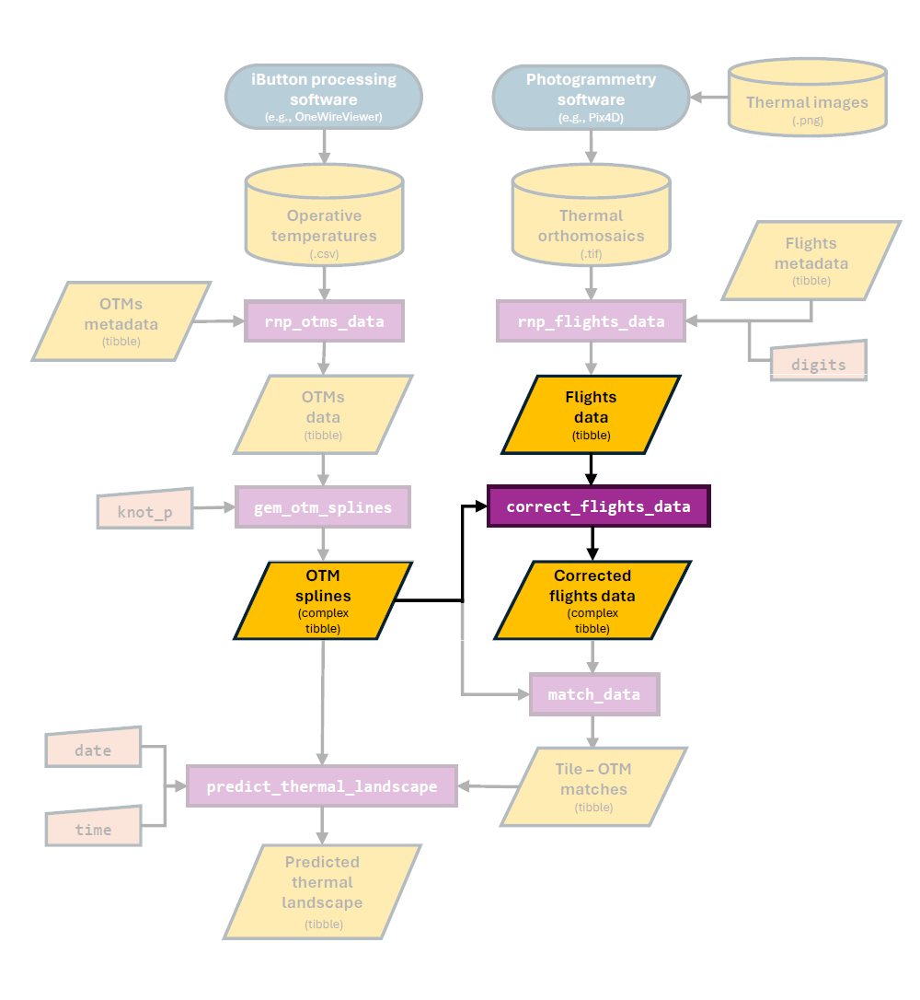

Correcting flight data
correcting_flight_data.RmdOverview
In this vignette, our aim is to illustrate how to correct temperature data obtained using thermal photogrammetry. By correcting, we are referring to the process of transforming the temperature measurements made via the IR cameras mounted into the drone into operative temperatures as measured using an operative temperature model (OTM). Below we highlight the section of the package’s workflow that is covered in this vignette:

The need from this correction stems from the fundamental difference between temperature estimates made using an IR camera and those made by making physical contact with an object. This is because the IR camera measurement is influenced by a wide range of factors including the object’s emissivity, the conditions in which the image is taken (ambient temperature, amount of light etc. see Playà-Montmany & Tattersall 2021 for further details).
In contrast, OTMs are designed to record temperature measurements that match the internal body temperature of the organism as closely as possible. This is achieved by enclosing a temperature logger (e.g., an iButton) inside of a structure of a similar size and with similar surface properties to the the organism of interest. This methodology has been used extensively in the field of thermal ecology and recent advances have minimized the costs of production and maximized the accuracy of OTMs (see our past work in Alujević et al. 2024).
Due to the above, the IR camera of the drone and the OTM will ultimately record fundamentally different temperature metrics. For the thermal measurements estimated using the drone to be truly representative of what the organism is experiencing, they must be corrected such that they instead describe operative temperatures.
The correct_flights_data function
To transform temperature measurements obtained using a drone-mounted
IR camera into operative temperature measurements, the
throne R package includes the
correct_flights_data function. This function will perform a
double correction on data collected via flights:
It corrects for date and time of the day to account for the differences in light conditions across seasons and throughout a day.
It corrects for the temperature value itself as to account for the differences in temperature measurements caused by the inherent biases associated with an IR measurement.
To perform such correction, the function will take 2 outputs:
- A
flights_datatibbleobtained through thernp_flights_datafunction.